Олимпийские дисциплины
Какие же дисциплины существуют на олимпийских играх?
Дисциплины Олимийских игр
-
BMX-мотокрос
В BMX-гонках максимум восемь гонщиков соревнуются на трассе с прямыми участками, буграми и виражами. Побеждает тот, кто первым пересечет финишную черту.
Велосипедный мотокросс, или веломотокросс (BMX), появился в Калифорнии в конце 60-х. В то же время, когда в США стал популярен мотокросс. Именно мотосоревнования привели к появлению похожих соревнований, только на мускульной тяге. BMX завораживал публику и не требовал больших инвестиций, а потому мгновенно снискал популярность – особенно в Калифорнии. В начале 70-х это привело к основанию в США управляющего органа. За следующее десятилетие BMX распространился на международном уровне. -
BMX-фристайл
В BMX-фристайле спортсмены выполняют трюки на ровной поверхности, в городской среде, на грунтовой трассе, в хафпайпе и/или на специальной рампе. Судьи оценивают выступления по сложности, оригинальности и точности исполнения.
Как отдельная спортивная дисциплина BMX-фристайл выделился из веломотокросса, который зародился в конце 60-х в Калифорнии. С 1980 по 1987 год популярность BMX-фристайла сильно выросла. Первым управляющим органом выступила основанная в 1982 году Ассоциация любительского скейт-парка. Спустя несколько лет она стала Американской ассоциацией фристайла. В конечном итоге BMX-фристайл взял под крыло Международный союз велосипедистов (UCI). -
Баскетбол
Баскетбол – это командный вид спорта на прямоугольной площадке. Две команды по пять игроков соревнуются, кто наберет больше очков, забрасывая мяч в кольцо, или корзину, соперника.
Баскетбол придумал канадец Джеймс Нейсмит в декабре 1891 года. Он преподавал физкультуру в Международном тренировочном колледже YMCA в Массачусетсе и хотел поддерживать студентов в форме в холодное время года. Нейсмит сформулировал 13 правил, большинство действуют до сих пор. В 1893 году в массачусетском колледже Смит в Нортгемптоне прошел первый женский матч по баскетболу. -
Бокс
Бокс – контактный вид спорта. Спортсмены наносят удары кулаками в голову или корпус соперника (выше пояса) и зарабатывают очки, которые присуждаются судьями, либо пытаются сделать так, чтобы соперник не смог продолжать бой.
Первые упоминания кулачного боя были найдены в Египте и датируются третьим тысячелетием до нашей эры. Набирать популярность в Европе бои на голых кулаках начали в XVI веке, преимущественно в Великобритании. В 1867 году были опубликованы правила маркиза Куинсберри. Они стали первыми правилами бокса и обязали боксеров использовать боксерские перчатки. -
Волейбол
Это игра с мячом, в которую играют две команды по шесть человек на площадке, перегороженной сеткой. Изначально игра называлась «минтонет», так как по сути напоминала бадминтон.
Волейбол придумал Уильям Джордж Морган, преподаватель физического воспитания в колледже Ассоциации молодых христиан (YMCA), в 1895 году в Холиоке, штат Массачусетс. Минтонет, как тогда называли игру, задумывался как веселое времяпрепровождение для старших членов YMCA. Некоторые элементы новая игра позаимствовала у других видов спорта, например, у тенниса и гандбола. -
Дзюдо
Дзюдо - это японское боевое искусство, где делается упор на технику бросков, захватов и удушающих приемов. В дзюдо большое внимание уделяется физической подготовке, психологии и спортивному поведению.
Отцом дзюдо считается японец Дзигоро Кано. В 1882 году он придумал действенную и безопасную форму физического воспитания и самообороны, которая опирается на принципы предельной эффективности. -
Плавание
Олимпийское плавание – это индивидуальный и командный вид спорта, в котором спортсмены вплавь преодолевают различные дистанции в бассейне или открытых водоемах. Соревнования по плаванию проводятся в четырех видах: вольным стилем, на спине, брассом и баттерфляем.
В древности люди учились плавать, чтобы пересекать реки и озера. В египетских пещерах обнаружены наскальные изображения пловцов, датирующиеся Каменным веком. Плавание упоминается в греческой мифологии. -
Гимнастика
Спортивная гимнастика была одной из девяти спортивных дисциплин, вошедших в программу первых Олимпийских игр современности в 1894 году. С тех пор гимнасты демонстрируют на Олимпиадах мастерство на различных снарядах и в вольных упражнениях на ковре.
Платон, Аристотель и Гомер неоднократно писали о пользе гимнастических упражнений. Греческие философы верили, что баланс между духом и телом возможен, только когда интеллектуальная активность сочетается с физической. Термин «спортивная гимнастика» появился в начале XIX века, чтобы отделить свободные гимнастические упражнения от методик, использовавшихся в военной подготовке. Соревнования по гимнастике быстро обрели широкую популярность и проводились в школах и атлетических клубах по всей Европе. В 1896 году гимнастика вошла в программу первых современных Олимпийских игр в Афинах. -
Скалолазание
Спортивное скалолазание возникло на основе традиционного скалолазания и является относительно новым видом спорта в олимпийской программе. В нем выделяют три дисциплины: лазание на трудность, лазание на скорость и боулдеринг. В каждой спортсмен преодолевает дистанцию, используя размещенные на стене зацепы.
Считается, что лазание по скалам как хобби появилось в конце XIX века. В 1985 году группа скалолазов собралась недалеко от Турина, в Бардонеккье, на турнир SportRoccia. Год спустя в пригороде Лиона, Во-ан-Велене, прошло первое соревнование на искусственной стенке В начале 90-х международные соревнования стали проводить только на искусственных конструкциях, чтобы не вредить природе. Защита окружающей среды – одна из основополагающих ценностей этого вида спорта. Скалолазы обязуются поддерживать в надлежащем порядке объекты, на которые поднимаются. -
Настольный теннис
Настольный теннис – спортивная игра с мячом и ракетками. В нее играют один на один или пара на пару, как и в большом теннисе, только не на корте, а на разграниченном пополам столе.
Считается, что настольный теннис появился в 1880-е годы в высших слоях общества викторианской Англии. В нем видели домашнюю альтернативу лаун-теннису. В качестве инвентаря использовали что было под рукой. Сеткой могли служить поставленные боком книги, мячом – округлая часть пробки от шампанского. За ракетки вполне могли сойти коробки из-под сигар. В 1926 году в Берлине и Лондоне прошли встречи, которые привели к созданию Международной федерации настольного тенниса.
-
Теннис
Современный теннис – это вид спорта, в котором соперничают два игрока (одиночный разряд) либо две команды из двух игроков одного пола (парный разряд) или разных полов (смешанный парный разряд, микст). У тенниса давняя история. Считается, что игра в ее сегодняшнем виде зародилась в Англии.
Прообразом современного тенниса называют французскую игру «же-де-пом», первые упоминания о которой датируются XI веком. В нее играли в монастырских двориках, используя стены и даже покатые крыши зданий по периметру, а мяч отбивали ладонью. -
Триатлон
Триатлон – это мультиспортивная гонка, объединяющая плавание, велоспорт и бег. Побеждает тот, кто первым прибегает к финишу.
Как отдельная спортивная дисциплина BMX-фристайл выделился из веломотокросса, который зародился в конце 60-х в Калифорнии. В начале 1970-х триатлон придумали в легкоатлетическом клубе Сан-Диего как альтернативу тренировкам на стадионе. Первые соревнования клуба в этой дисциплине состояли из бега на 10км, велогонки на 8км и заплыва на 500м. Следующие десять лет популярность триатлона росла и достигла глобальных масштабов. -
Прыжки в воду
Прыжки в воду – это вид спорта, в котором спортсмены выполняют акробатические действия во время прыжков или падений в воду с вышки или трамплина. В прыжках в воду успех приносят те же качества и навыки, что в гимнастике: сила, гибкость, мощь, умение удерживать равновесие и ориентироваться в воздухе.
В XVIII и XIX веках прыжки в воду были популярны в Швеции и Германии. В основном ими занимались гимнасты, практиковавшие акробатические упражнения на воде. -
Сквош
Сквош – это игра с мячом и ракетками, в которой обычно два человека играют на окруженном четырьмя стенами прямоугольном корте. Пол покрыт твердым деревом. Стены, как правило, выполнены из прочного стекла, чтобы зрители могли следить за игрой. Мячи изготавливаются из резины и обычно обладают слабым отскоком. Перед началом матча игрокам надо разогреть мячи, ударяя их о стены корта.
Сквош – потомок игры рэкетс, которая произошла от тенниса. В XVIII веке в рэкетс играли заключенные лондонских тюрем, которые били мячом по стене или углам, задействуя боковые стенки. -
Футбол
Футбол – самый популярный вид спорта на планете. Это командная игра с мячом 11 на 11, в которой каждая команда старается забить мяч в ворота соперника.
Разновидность футбола существовала еще в Древнем Китае. Более современная версия появилась в средневековой Англии. Жители соседних деревень развлекались тем, что дрались за набитый свиной мочевой пузырь. Импровизированный мяч всей толпой пинали из одного конца деревни в другой. В 1863 году Футбольная ассоциация Англии опубликовала правила игры. -
Фехтование
Фехтование – это боевой вид спорта, в котором два спортсмена используют клинковое оружие для нанесения и отражения ударов. Очки получает тот, кто поражает соперника. Современное спортивное фехтование включает в себя три дисциплины: рапиру, шпагу и саблю. В каждой используется оружие с особым клинком и действуют свои правила.
В древнем Египте фехтованием занимались еще в 1190 году до нашей эры. Поединки на холодном оружии и дуэли продолжались до XVIII века. -
Хоккей на траве
Хоккей бывает двух видов: на траве и на льду. На летних Олимпиадах играют на траве, точнее – на искусственном травяном покрытии. Две команды по 11 игроков (десять полевых и вратарь) стараются отправить мяч в ворота соперника. Мяч твердый, размером чуть больше теннисного, а клюшки имеют загнутые крюки.
История хоккея в разнообразных его проявлениях насчитывает тысячелетия. С клюшками и мячом играли в Египте (4000 лет назад), Эфиопии (1000 лет до н.э.) и Иране (2000 лет до н.э.). Римляне, греки и даже ацтеки играли в свои виды хоккея. В современном прочтении он появился в середине XIX века в Англии. В 1876 году в Великобритании возникла первая хоккейная ассоциация, которая и разработала первый свод правил. Организация прожила всего шесть лет, но возродилась в 1886-м, когда девять клубов основали Ассоциацию любительского хоккея на траве. -
Легкая атлетика
Легкая атлетика сочетает в себе различные дисциплины, связанные с бегом, прыжками, метанием или ходьбой. Существуют индивидуальные соревнования, например, 100-метровка, марафон или прыжки в длину; комбинированные, такие как десятиборье или семиборье; и командные, например, эстафета 4х100м.
На протяжении всей известной истории спорта люди занимались атлетикой. Первым видом на Олимпиадах в Древней Греции был бег на одну стадию, то есть примерно на 192 метра. Имена победителей в этой дисциплине известны с 776 года до нашей эры. -
Гольф
Цель гольфа состоит в том, чтобы, начав со стартовой позиции, забить клюшкой мяч в лунку за как можно меньшее количество ударов.
Согласно некоторым исследованиям, в подобную игру под названием colf или kolven играли в Нидерландах, откуда она в XV веке попала на Британские острова. Первую редакцию правил утвердили в 1754 году в шотландском Сент-Эндрюсе. -
Шоссейные гонки
Это велогонки с общим или раздельным стартом, которые чаще всего проходят на асфальтированных дорогах. Хотя иногда приходится соревноваться на булыжном или даже гравийном покрытии.
Велосипеды появились в начале XIX века и постепенно стали популярным видом транспорта. Велоспорт совершил громадный рывок в 1885 году, когда Джон Старли придумал цепную передачу. С тех пор инженеры постоянно внедряли новые технологии, делая велосипеды быстрее, легче и удобнее.
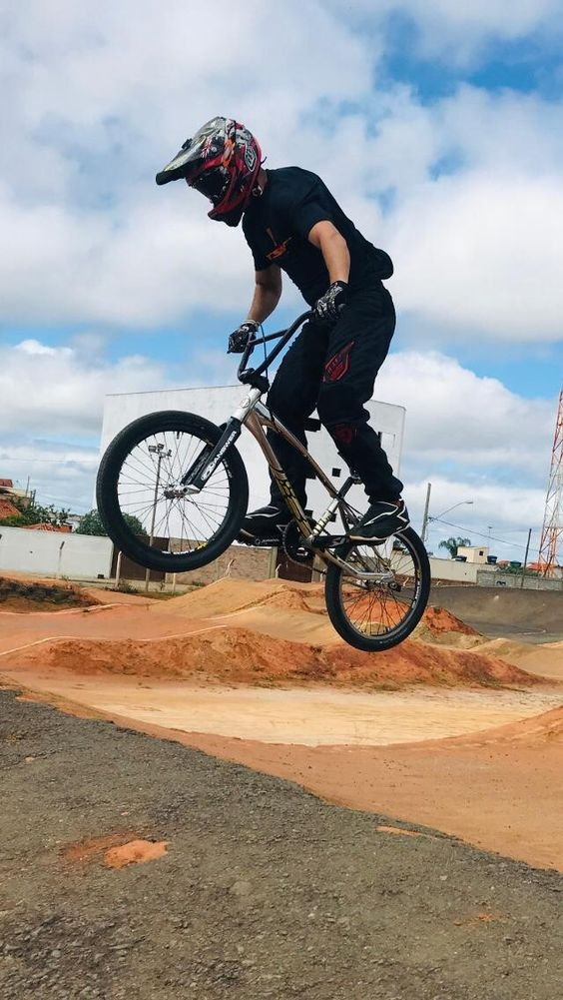
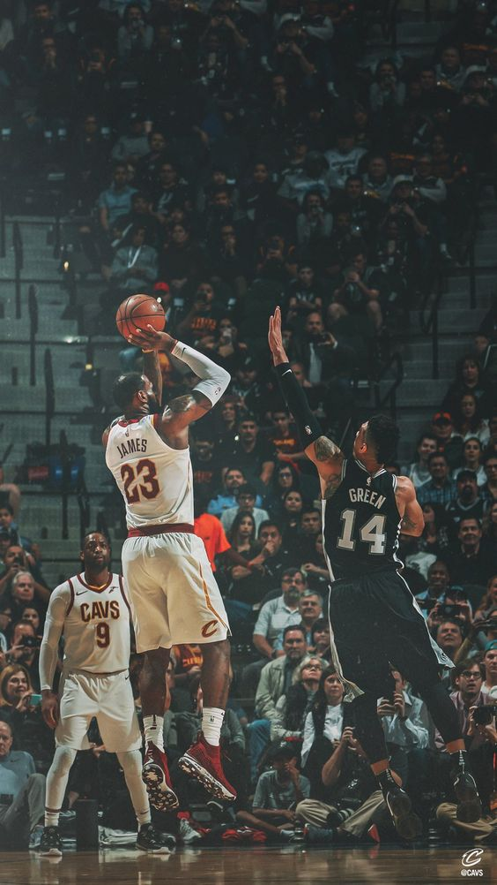
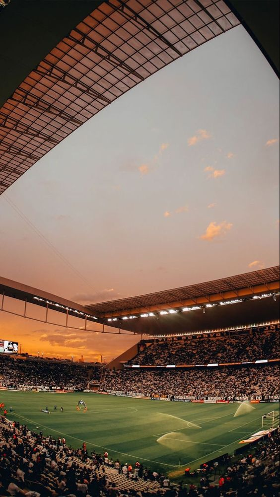
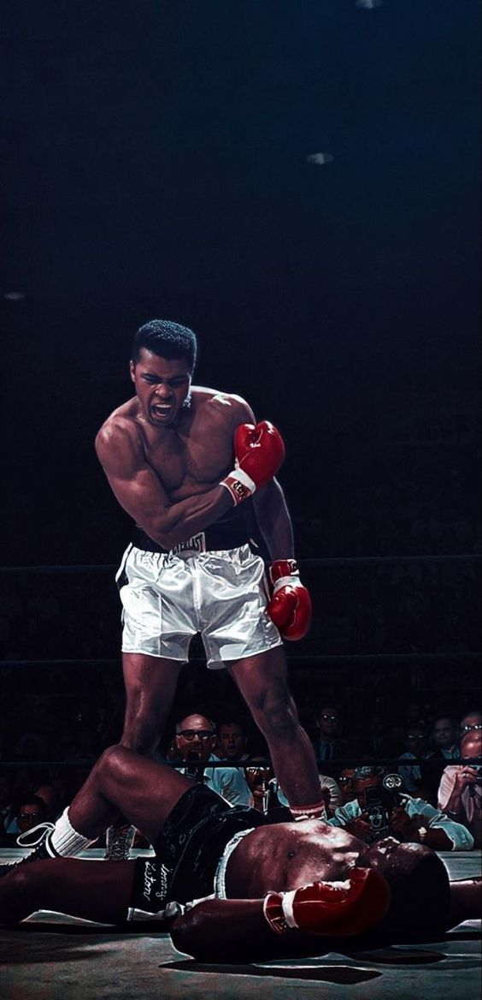
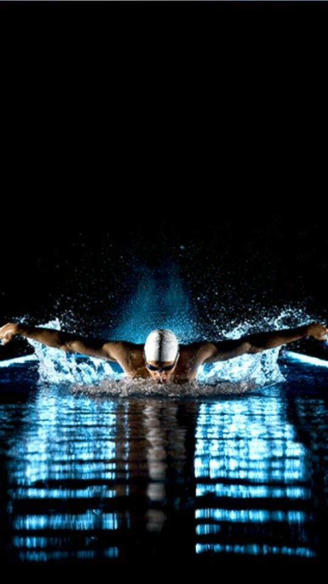
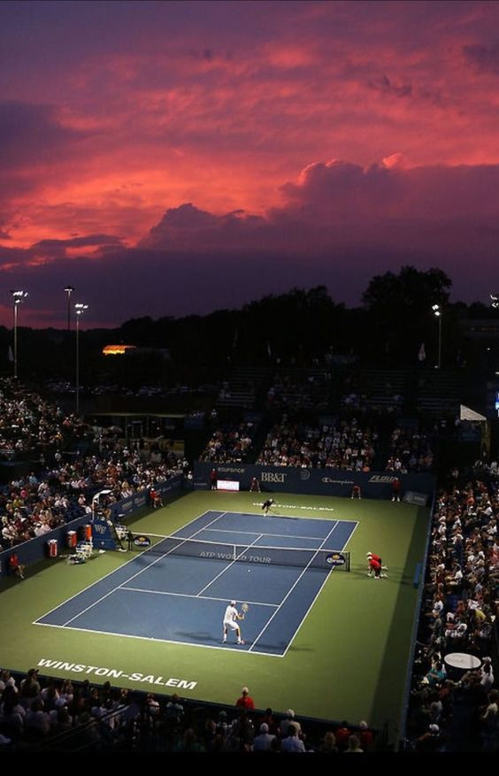
Дисциплины Зимних Олимийских игр
-
Бобслей
Бобслей – зимний вид спорта, которые изобрели швейцарцы в 60-х годах XIX века. Экипаж на управляемых санях осуществляет скоростной спуск по узкой извилистой ледяной трассе с высокими бортами.
Как самостоятельный вид спорта бобслей появился в конце XIX века, когда швейцарцы скрепили две пары саней и добавили рулевой механизм. Чтобы обезопасить богатых туристов, сани оборудовали рамой. В 1897 году в Санкт-Морице появился первый бобслейный клуб. -
Горнолыжный спорт
У горнолыжного спорта древняя история. Принято считать, что в близком к современному виду скоростной спуск появился в середине XIX века, когда норвежец Сондре Норхейм популяризировал лыжи с вогнутыми краями и плотно фиксировавшими пятку креплениями из ивы, а также повороты телемарк и слалом.
Первые лыжи относятся к доисторическим временам. Древние лыжи в виде деревянных досок по сей день находят в торфяниках на территории России, Финляндии, Швеции и Норвегии. Радиоуглеродный анализ показал, что найденные в России фрагменты лыж появились за 7-8 тысяч лет до нашей эры. Вполне вероятно, что в северных странах лыжи использовали тысячелетиями. -
Керлинг
Керлинг – командный вид спорта. Две команды по четыре человека соревнуются на прямоугольной ледовой площадке. Своим прозвищем «игра в ревущие камни» обязана грохоту, с которым гранитные снаряды весом 44 фунта (19,96 кг) скользят по льду. -
Конькобежный спорт
Конькобежный спорт развился из практичного способа передвигаться по замерзшим рекам и озерам.
Первый известный турнир по катанию на коньках прошел в 1676 году в Нидерландах. Официальный турнир по конькобежному спорту впервые состоялся лишь в 1863 году в Осло. В 1889-м Нидерланды приняли дебютный чемпионат мира, где, помимо хозяев, выступили команды из России, Англии и США.
-
Скелетон
Скелетон – это скоростной спуск на санях вперед головой по крутой ледяной трассе. Он считается первым санным видом спорта.
Катание на санях – старейший из зимних видов спорта. Его первое описание можно встретить уже в литературе XVI века. Как гоночное состязание санный спорт зародился в середине XIX века, когда британские туристы стали кататься с горы по заснеженным альпийским дорогам. Отдыхающие из Великобритании и США в 1882 году построили в Давосе первую трассу для тобоггана. -
Сноуборд
Сноубординг включает в себя элементы серфинга, скейтбординга и горнолыжного спорта.
Катание по снегу на досках появилось в 60-е годы в США, где экстремалы искали новые способы развлечений в зимнее время. За следующие 10 лет энтузиасты наладили производство сноубордов, и этот вид спорта начал покорять мир. Сноубординг привлек интерес серферов и скейтбордистов и получил общенациональное признание в 80-е. -
Фигурное катание
Фигурное катание проделало долгий путь – от практичного способа передвигаться по льду до элегантного сочетания искусства и спорта.
Первыми коньки полюбили голландцы. Еще в XIII веке они добирались из деревни в деревню по замерзшим каналам. Со временем катание проникло в Англию, где открылись первые клубы и искусственные катки. Кататься на коньках любили короли Англии, Мария-Антуанетта, Наполеон III и Иоганн Гёте. -
Хоккей с шайбой
Хоккей с шайбой – захватывающий и динамичный командный вид спорта. Драматичные и напряженные матчи на Олимпийских играх привлекают огромную аудиторию.
Первая в истории команда возникла в 1880 году и называлась «Хоккейный клуб Университета Макгилл». Вскоре хоккей распространился по всей Канаде и стал национальным видом спорта. В 1892 году генерал-губернатор страны учредил приз – Кубок Стэнли. Его первым обладателем стала команда «Монреаль ААА» (Montreal Amateur Athletic Association).
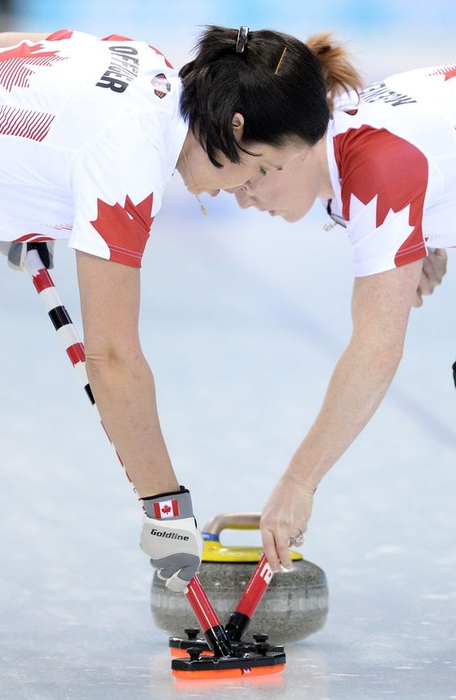
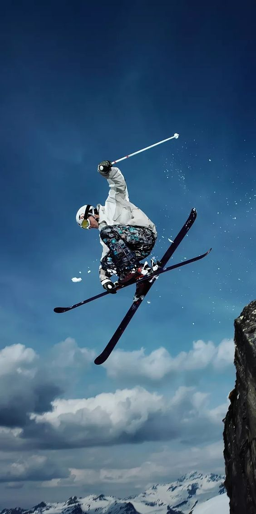
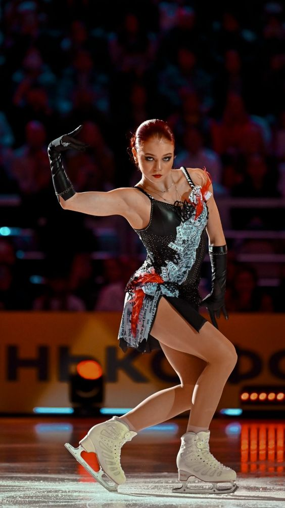
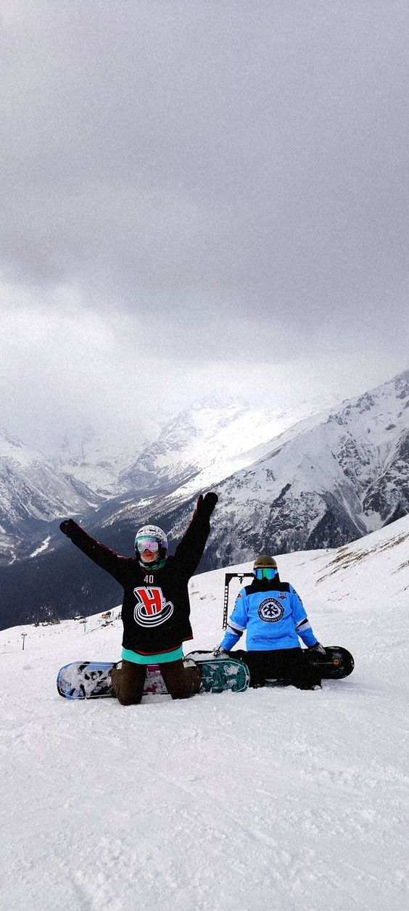
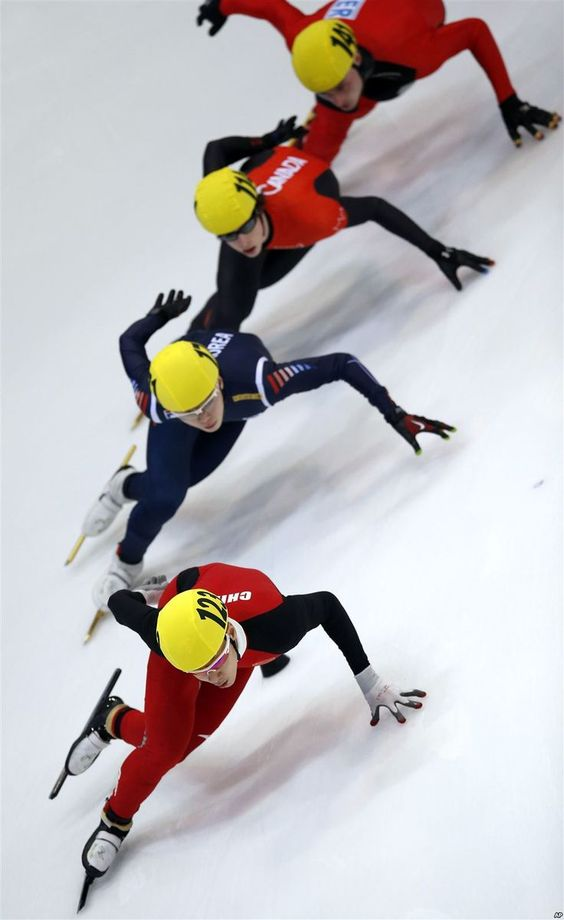